Cylinder Head Assembly (2GR-FE) Disassembly |
| 1. Remove Valve Stem Cap |
Remove the 24 valve stem caps.
| 2. Remove Intake Valve |
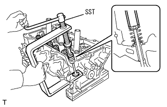 |
Using SST, remove the valve spring retainer locks.
Remove the valve spring retainer, inner compression spring and intake valve.
| 3. Remove Exhaust Valve |
 |
Using SST, remove the valve spring retainer locks.
Remove the valve spring retainer, inner compression spring and exhaust valve.
| 4. Remove Intake Valve Stem Oil Seal |
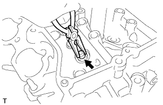 |
Using needle-nose pliers, remove the intake valve stem oil seal.
| 5. Remove Exhaust Valve Stem Oil Seal |
Using needle-nose pliers, remove the exhaust valve stem oil seal.
| 6. Remove Valve Spring Seat |
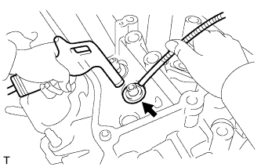 |
Using a magnetic finger and an air gun, remove the valve spring seats.
| 7. Remove Plug NO.1 (w/ Head Straight Screw) |
 |
Using socket hexagon wrench 10, remove the 4 straight screw plugs No.1 and 4 water hole gaskets.
| 8. Remove Plug NO.2 (w/ Head Straight Screw) |
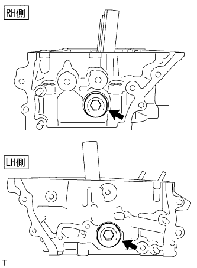 |
Using a 14 straight hexagon wrench, remove the 2 straight screw plugs No.2 and 2 screw plug gaskets.
| 9. Remove Ring Pin |
Remove the ring pins from each cylinder head.
| 10. Remove Stud Bolt |
Remove the stud bolts from each cylinder head.
| 11. Inspect Cylinder Head |
Inspect for Warpage
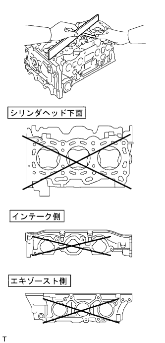 |
Using a straightedge and feeler gauge, measure the warpage of the cylinder head bottom surface and manifold installation surfaces.
| Measurement Point | Standard [mm] |
|---|---|
| Bottom Surface | 0-0.05 |
| Intake Manifold Contact Surface | 0-0.08 |
| Exhaust Manifold Contact Surface | 0-0.08 |
| Measurement Point | Maximum [mm] |
|---|---|
| Bottom Surface | 0.10mm |
| Intake Manifold Contact Surface | 0.10mm |
| Exhaust Manifold Contact Surface | 0.10mm |
Inspect for Cracks
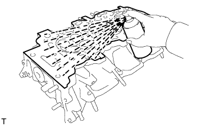 |
Using a dye penetrant (red check), check that there are no cracks in the cylinder head.
| 12. Inspect Intake Valve |
Outer Diameter Inspection
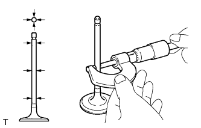 |
Using a micrometer, measure the diameter of the valve stem.
Margin Thickness Inspection
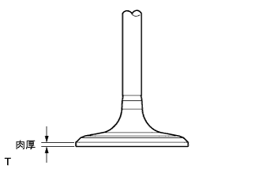 |
Using vernier calipers, measure the valve head margin thickness.
Overall Length Inspection
 |
Using vernier calipers, measure the overall length of the intake valve.
| 13. Inspect Exhaust Valve |
Outer Diameter Inspection
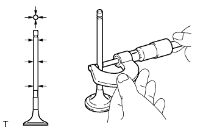 |
Using a micrometer, measure the diameter of the valve stem.
Margin Thickness Inspection
 |
Using vernier calipers, measure the valve head margin thickness.
Overall Length Inspection
 |
Using vernier calipers, measure the overall length of the exhaust valve.
| 14. Inspect Intake Valve Seat |
Apply a light coat of Prussian blue to the valve face.
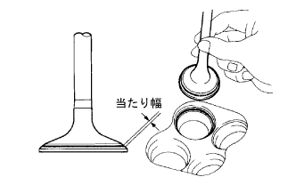 |
Lightly press the valve against the valve seat and, using vernier calipers, check the valve seat contact position and width.
| 15. Inspect Exhaust Valve Seat |
Apply a light coat of Prussian blue to the valve face.
Lightly press the valve against the valve seat and, using vernier calipers, check the valve seat contact position and width.
| 16. Repair Intake Valve Seat |
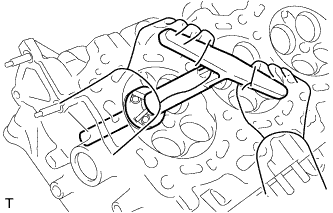 |
Using a 45° cutter head, cut the seat so that the contact width is wider than specified.
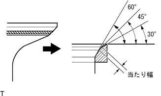 |
Using 30° and 60° cutter heads, cut the seat so that the valve contacts at the center of the face around the entire circumference and the contact width is as specified.
Using compound, lap the intake valve and intake valve seat.
After lapping, using Prussian blue, check that the intake valve contact is uniform around the entire circumference.
| 17. Repair Exhaust Valve Seat |
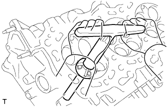 |
Using a 45° cutter head, cut the seat so that the contact width is wider than specified.
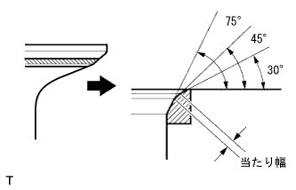 |
Using 30° and 75° cutter heads, cut the seat so that the valve contacts at the center of the face around the entire circumference and the contact width is as specified.
Using compound, lap the exhaust valve and exhaust valve seat.
After lapping, using Prussian blue, check that the exhaust valve contact is uniform around the entire circumference.
| 18. Inspect Inner Compression Spring |
Free Length Inspection
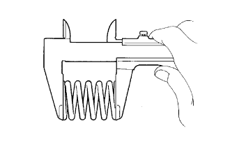 |
Using vernier calipers, measure the free length of the spring.
Deviation Inspection
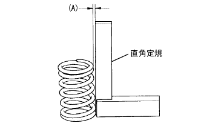 |
Using a square and vernier calipers, measure the squareness (A) of the spring.
| 19. Inspect Valve Guide Bushing Oil Clearance |
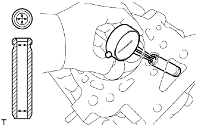 |
Using a caliper gauge, measure the inside diameter of the guide bushing.
Calculate the oil clearance from the guide bushing inside diameter and valve stem diameter.
| Measurement Point | Standard [mm] |
|---|---|
| Intake Side | 0.025-0.060 |
| Exhaust Side | 0.030-0.065 |
| Measurement Point | Maximum [mm] |
|---|---|
| Intake Side | 0.08 |
| Exhaust Side | 0.10 |
| 20. Remove Intake Valve Guide Bushing |
Heat the cylinder head to 80-100°C.
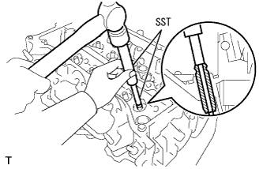 |
Using SST, tap out the intake valve guide bushing toward the combustion chamber.
| 21. Remove Exhaust Valve Guide Bushing |
Heat the cylinder head to 80-100°C.
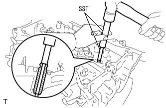 |
Using SST, tap out the exhaust valve guide bushing toward the combustion chamber.
| 22. Install Intake Valve Guide Bushing |
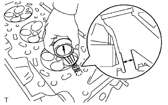 |
Using a caliper gauge, measure the inside diameter of the guide bushing installation hole in the cylinder head.
If the diameter is within specification, install an STD bushing.
If the diameter is not within specification, use a hand reamer and T-type tap holder to ream the bore to 10.335-10.356mm, and install an O/S bushing.
| STD | 10.333-10.344mm |
| O/S | 10.383-10.394mm |
Heat the cylinder head to 80-100°C.
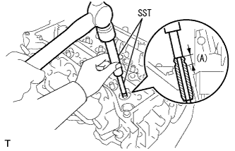 |
Using SST, tap in a new valve guide bushing to the standard protrusion height (A).
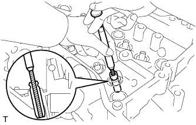 |
Using a hand reamer and a pin vise, ream the valve guide bushing to obtain the standard oil clearance.
| 23. Install Exhaust Valve Guide Bushing |
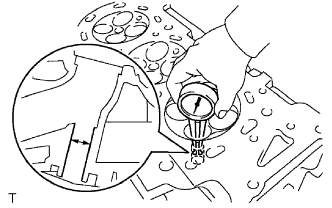 |
Using a caliper gauge, measure the inside diameter of the guide bushing installation hole in the cylinder head.
If the diameter is within specification, install an STD bushing.
If the diameter is not within specification, use a hand reamer and T-type tap holder to ream the bore to 10.335-10.356mm, and install an O/S bushing.
| STD | 10.333-10.344mm |
| O/S | 10.383-10.394mm |
Heat the cylinder head to 80-100°C.
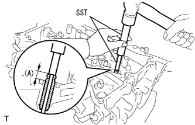 |
Using SST, tap in a new valve guide bushing to the standard protrusion height (A).
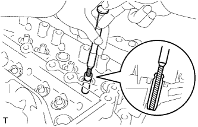 |
Using a hand reamer and a pin vise, ream the valve guide bushing to obtain the standard oil clearance.
| 24. Inspect Camshaft Thrust Clearance |
Install the camshaft, camshaft No.2 and cam housing to the cylinder head. (see)
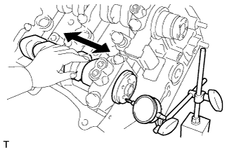 |
Using a dial indicator, measure the thrust clearance of the camshaft and camshaft No.2.
Install camshaft No.3, camshaft No.4 and the cam housing to the cylinder head. (see)
Using a dial indicator, measure the thrust clearance of camshaft No.3 and camshaft No.4.
| 25. Inspect Camshaft Oil Clearance |
Clean the camshaft journals, camshaft housing and bearing caps.
Place the camshaft, camshaft No.2 and camshaft housing on the cylinder head.
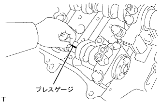 |
Lay a strip of Plastigage across each camshaft journal.
Install the camshaft bearing caps and camshaft housing to the cylinder head. (see)
Remove the camshaft bearing caps.
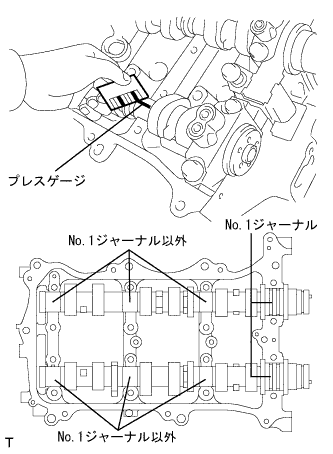 |
Measure the Plastigage at its widest point.
| Measurement Point | Standard [mm] |
|---|---|
| No. No.1 Journal | 0.040-0.079 |
| Other than No. No.1 Journal | 0.025-0.062 |
| Measurement Point | Maximum [mm] |
|---|---|
| No. No.1 Journal | 0.10 |
| Other than No. No.1 Journal | 0.09 |
Clean the camshaft journals, camshaft housing and bearing caps.
Place camshaft No.3, camshaft No.4 and the camshaft housing on the cylinder head.
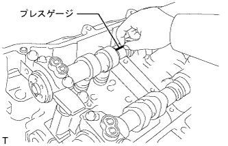 |
Lay a strip of Plastigage across each camshaft journal.
Install the camshaft bearing caps and camshaft housing to the cylinder head. (see)
Remove the camshaft bearing caps.
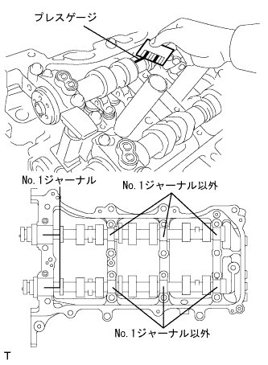 |
Measure the Plastigage at its widest point.
| Measurement Point | Standard [mm] |
|---|---|
| No. No.1 Journal | 0.040-0.079 |
| Other than No. No.1 Journal | 0.025-0.062 |
| Measurement Point | Maximum [mm] |
|---|---|
| No. No.1 Journal | 0.10 |
| Other than No. No.1 Journal | 0.09 |